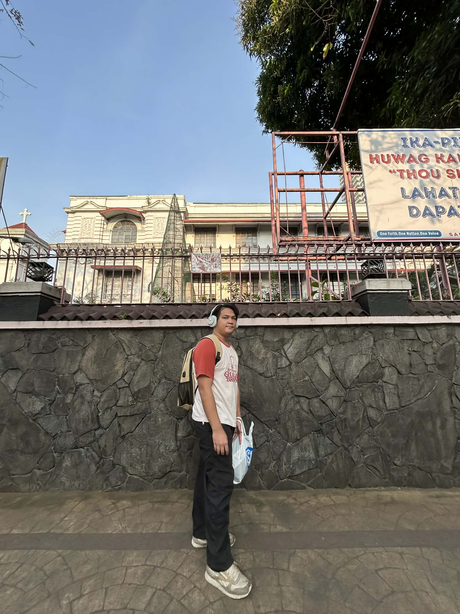

Isang Pahina
May panahon sa buhay ko na nahumaling ako sa mga tula ni Rio Alma . Dahil doon, may naisulat akong tula para sa isang gawain sa ARTS.
Tinapay ang sagot
sa t'yang nagtatampo
isawsaw sa kape.
Sa 'yong balkonahe
Sapatos na kay bigat,
Gusot man ang damit.
Madaling umalis
sa nakamihasnan.
Sa sipag na taglay
Nagbunga ang t'yaga.
Pagkaing imported,
Sasakyang magarbo.
Nasanay sa hapdi
sa traydor na sikdo
Usalin sa sarili
“’to ang reyalidad”
Ngunit tila kulang
Lasa ng tinapay.
Napansin ang puti
Sa iyong mga buhok
Ugod ugod man ang
Iyong bawat lakad
Nagdaling nilisan
Ang pinaghirapan.